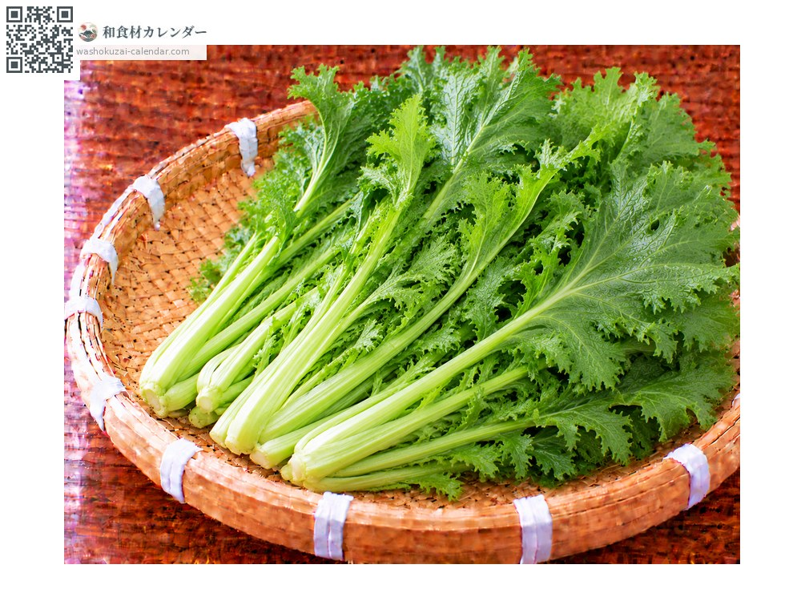
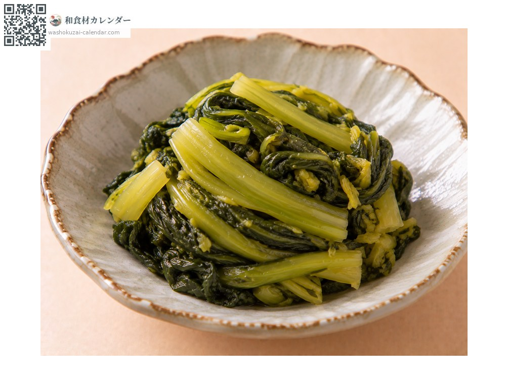
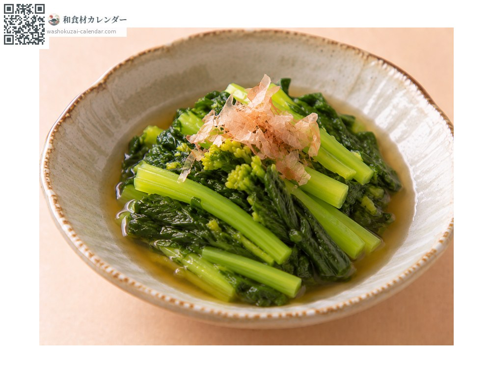
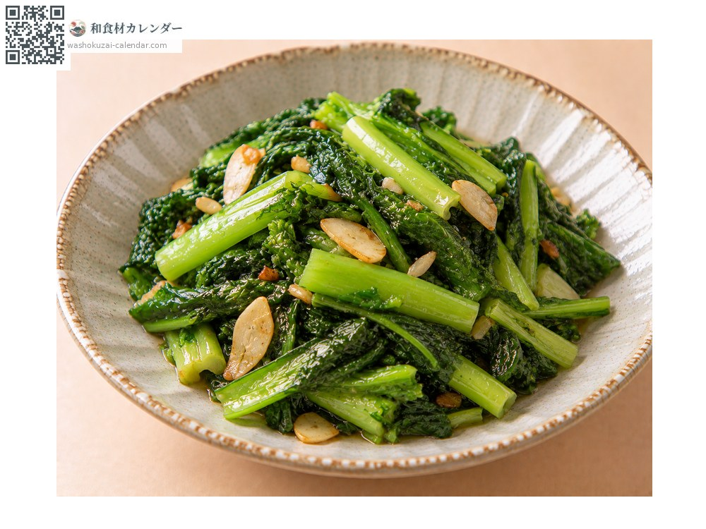
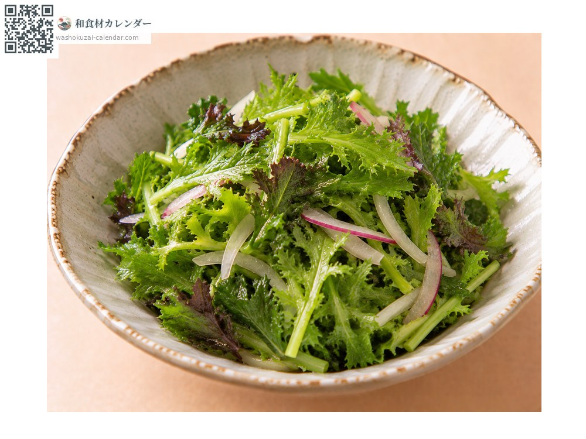

ผัก
ผักกาดเขียวเผ็ด
からし菜 からしな karashina
ชื่ออื่นkarashina
อร่อยที่สุดในเดือน ก.พ., มี.ค., เม.ย.

ช่วงที่อร่อยที่สุด
ม.ค.
ก.พ.
มี.ค.
เม.ย.
พ.ค.
มิ.ย.
ก.ค.
ส.ค.
ก.ย.
ต.ค.
พ.ย.
ธ.ค.
ช่วงอร่อยที่สุดมีจำหน่าย
วิธีปรุง

ผักดอง
ดองเกลือ ความเผ็ดจะอ่อนลงและได้รสอูมามิ

โอฮิตาชิ
ลวกเร็ว ๆ แล้วแช่น้ำดาชิ ความเผ็ดจะอ่อนลง

ผัด
ผัดน้ำมัน กลิ่นจะหอมขึ้น

สลัด
ใบอ่อนกินสด ความเผ็ดซ่าคือจุดเด่น
วิธีเลือก
ใบเขียวเข้มและตึง ไม่เหี่ยว ก้านเรียวและนุ่ม
วิธีเก็บรักษา
ห่อกระดาษชื้นแล้วตั้งขึ้นแช่เย็น ใช้ภายใน 2-3 วัน
แหล่งผลิตหลัก
เกร็ดน่ารู้
ความเผ็ดซ่ามาจากสารอัลลิลไอโซไทโอไซยาเนต ซึ่งเป็นสารเดียวกับในวาซาบิและหัวไชเท้า เมล็ดใช้ทำมัสตาร์ดญี่ปุ่น ทาคานะและคัตสึโอะนะก็อยู่ในกลุ่มเดียวกัน แถบคิวชูนิยมนำมาดองกินกันอย่างแพร่หลาย